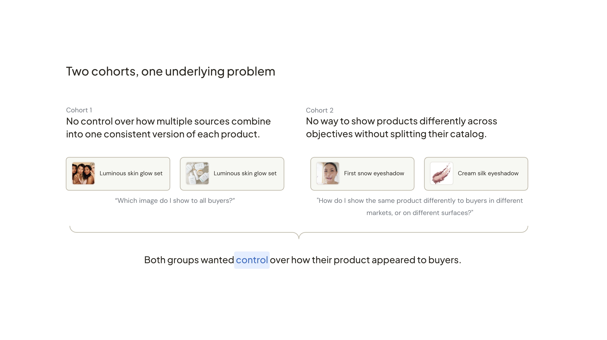
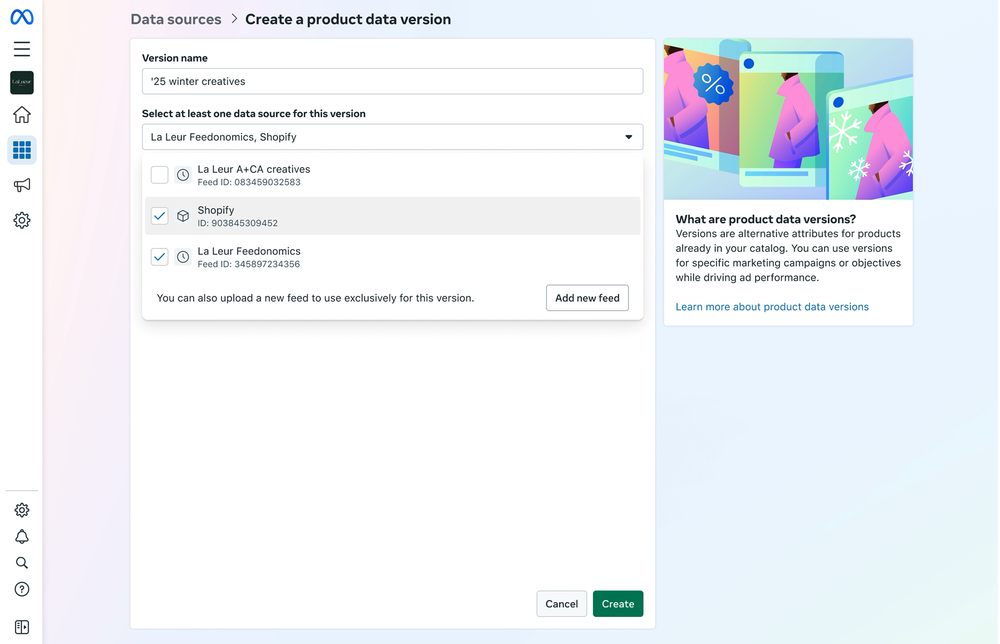
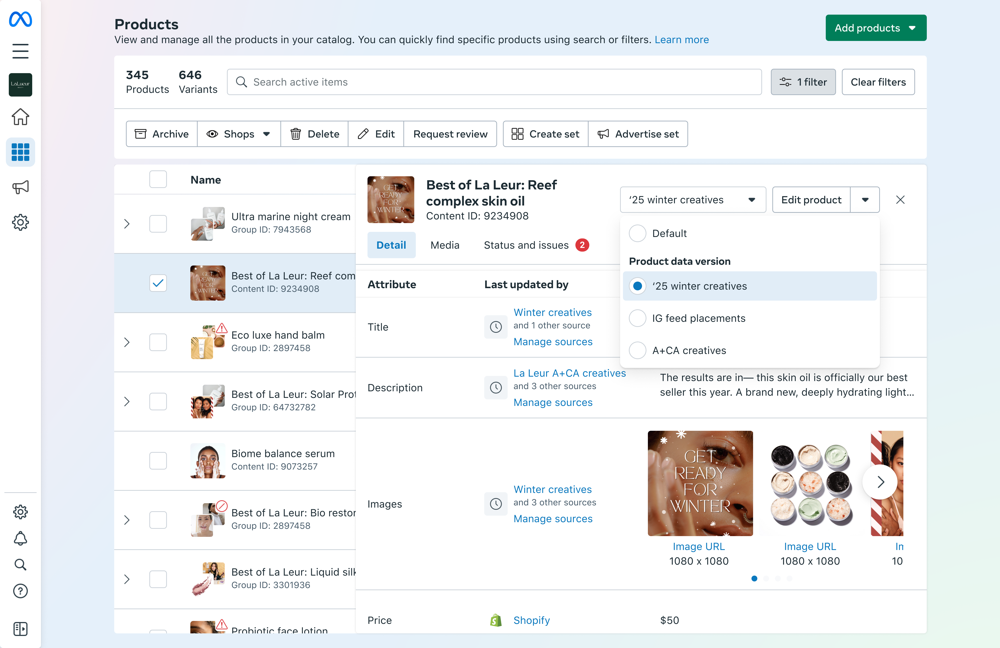

Catalog Data Controls
Giving advertisers control over how their products appear across different marketing objectives.
Key contributions
- Defined product direction across both phases and built a design vision for Product Data Versions, shaping the beta roadmap for 5+ downstream engineering workstreams
- Led advertiser research for Product Data Versions. Conducted alpha exit interviews with 8 advertisers, translated findings into use case framing, and wrote setup guides for beta testers.
- Partnered with the engineering lead to co-author the technical behaviour proposal before build began
- Led design execution across both phases, from Configure Sources launch through Product Data Versions alpha and beta
Role
Lead Product Designer
Team
1 CD, 11 Eng, 1 PM (Consult), 0.5 PMM
Timeframe
11 months
Meta's product catalog ↗ powers the product information shown across ads and commerce experiences on Facebook and Instagram.
As advertisers grow, they often manage that information using multiple data sources. For example, a Shopify connection for live prices, a data feed for ad-optimised images. When two sources disagree on the same attribute, Meta decides which one wins. Before this project, advertisers had no visibility into that decision and no way to change it.
This created two problems. Some advertisers needed one consistent version of each product but had no control over which source won when they conflicted. Others needed products to appear differently across objectives, such as different images for ads versus Shops, but their only option was maintaining separate catalogs per objective, which created overhead and hurt performance.
Through research and strategy work, we realised both problems were manifestations of the same underlying need: advertisers wanted more control over how their products appeared to buyers. That insight shaped the direction of both phases of work: Configure Sources, which gave advertisers visibility and control over their data, and Product Data Versions, which let them apply that control across different objectives.

This project is under NDA. Screens shown here have shipped publicly. Full case study is available on request.
Design principles
With two phases addressing the same underlying goal from different angles, I created design principles to keep decisions coherent across both.
Transparency before control
Advertisers needed to understand their data before they could confidently change it. Configure Sources surfaces which source is winning for each attribute before offering controls to change it. Product Data Versions lets advertisers validate that version data is correct before anything goes live.
Create a reusable model for control
Advertisers shouldn't need to learn a different workflow for different types of catalog control. Configure Sources and Product Data Versions share the same prioritisation patterns and concepts, so each new capability builds on what advertisers already know, rather than introducing new mental models from scratch.
Build foundations that can scale
The system was designed to support capabilities beyond the initial Product Data Versions beta without requiring breaking changes later. Localisation is a good example — it wasn't shipped in beta, but the data model had to account for it from the start. Getting the architecture right early meant future capabilities could be added without rebuilding what already existed.
Configure Sources
Configure Sources gave advertisers what they were missing: visibility into which source was winning for each attribute, and the controls to change it.
I co-led foundational research with our researcher and scoping with engineering, then led design through to launch. Some highlights:
Surfacing conflicts before offering controls

Advertisers couldn't fix what they couldn't see. Attributes where sources disagree are surfaced first, ordered by how consequential a conflict is. From there, advertisers drag to reprioritise, changing which source wins for any attribute.
Making the default visible

Meta had always chosen a winning source if there was a conflict, advertisers just couldn't see which one, or why. Now, the design surfaces that choice explicitly, so advertisers can make an informed decision about their data. They can override it, but at least one source must always be set, so buyers always see accurate product information.
Results
Outcomes
- Exceeded the revenue protection goal by 2x, protecting hundreds of millions in advertiser revenue
- Unblocked advertisers who couldn't run product ads without source-level control
- Saved 2.66 engineering years previously spent manually resolving data conflicts
What it unlocked
- Established the foundation for Product Data Versions and future objective-specific catalog customisation within a single catalog
"The greatest product update from Meta I’ve seen all year." — Director of Marketing, Beauty Group
Product Data Versions
Configure Sources solved visibility and control within a single representation of a product. Product Data Versions extended that control across objectives — letting advertisers create alternate versions of their product information within a single catalog, without duplicating it or changing what buyers see by default.
Alongside leading design from alpha through beta, I partnered with engineering to define the underlying behavioural model before build began, and created a design vision that aligned multiple teams around a shared direction. Some highlights:
A version that doesn't disturb the default

Advertisers previously had to create separate catalogs to show products differently for different objectives, a workaround that hurt performance. Versions solve that by letting advertisers create alternate representations of their products within a single catalog, without changing how those products appear by default.
Validate products before running ads

Version data involves layering new sources of information onto existing products. It's easy for something to apply to the wrong products, or not appear as expected, without any visible signal. Validation tools let advertisers review versioned products before launch: confirming data uploaded correctly, checking that version information is applied to the right products, and previewing how the ad will look before anything goes live.
Results
Outcomes
- Revenue exceeded the ship goal within the first two months of beta
- Satisfaction scores averaged 8–9/10 across exit interviews
- Consistent ROAS improvement1 reported across the beta cohort
What it unlocked
- The design strategy shaped the roadmap for 5+ downstream workstreams
- Beta results secured investment for the next phase of the product
Key Takeaway
The technical behaviour proposal, the advertiser interviews, the go-to-market framing, none of that looks like design work. But each shaped how advertisers would understand and use what we built. Getting the foundation right was as important as getting the design right.
Design's job isn't just to make things look right. It's to make sure the thinking behind the product is as considered as the product itself.